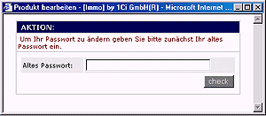
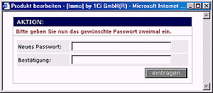
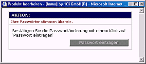
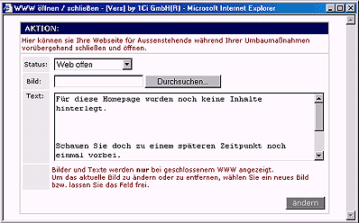

Passwort
ändern
|
|
Mit Ihren Unterlagen haben Sie auch Ihre Zugangsdaten (Login,
Passwort) für den Administrationsbereich Ihrer
Internetpräsenz erhalten.
Es empfiehlt sich aus Sicherheitsgründen
Passwörter regelmäßig zu ändern.
Ein ändern Ihrer Zugangsdaten, können Sie in der
Administration unter dem Punkt Security vornehmen.
|
|  |
Geben Sie zunächst Ihr altes
Passwort ein um sicherzustellen, dass Sie die Berechtigung für die
Änderung besitzen. |
|
|
|  |
Geben Sie nun zweimal das von
Ihnen gewünschte neue Passwort ein, um sicherzustellen, dass Sie sich
nicht verschrieben haben. |
|
|
|  |
Wenn Ihre gewünschten
Passwörter übereinstimmen, müssen Sie die Passwortänderung mit Klick
auf <Passwort eintragen>
bestätigen und abschließen. |
|
|
| WWW
öffnen / schließen |
|
Bei
Umbaumaßnahmen haben Sie die Möglichkeit Ihren Web-Auftritt zu
schließen.
Es wird dann für alle Aussenstehende, dass
heißt nicht Eingeloggte, eine von Ihnen definierbare Seite angezeigt.
Diese können Sie in der Administration unter dem Punkt WWW öffnen /
schließen nach Ihren Wünschen gestalten.
|
|  |
Unter dem Punkt Status können
Sie den aktuellen Zustand Ihres Webs bestimmen...
|
| |
|